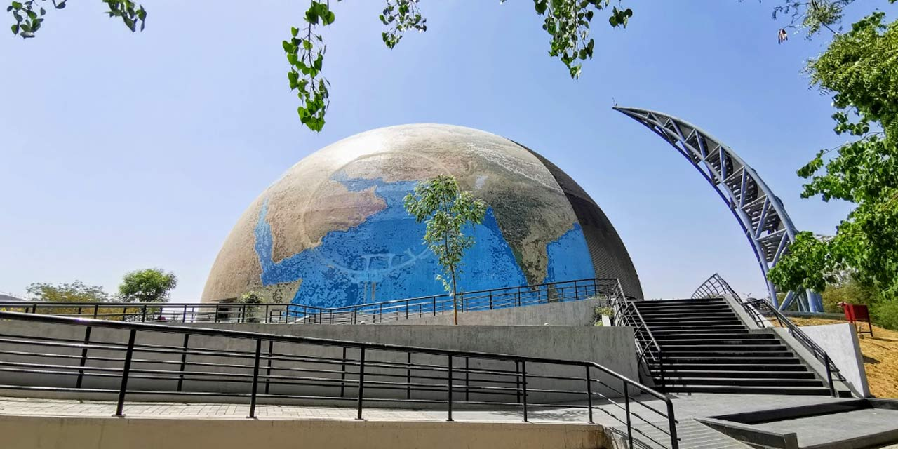

The Sidi Saiyyed Mosque, popularly known as Sidi Saiyyid ni Jali locally, is one of the most famous mosques of Ahmedabad.
Villa Sarabhai, or Villa de Madame Manorama Sarabhai, is a modernist villa located in Ahmedabad. It was built with an austere interior, a typical Le Corbusier design principle.
Bhadra Fort is situated in the walled city area of Ahmedabad.With its well carved royal palaces, mosques, gates and open spaces.

Amdavad ni Gufa is an underground art gallery in Ahmedabad.The gallery represents a unique juxtaposition of architecture and art. The cave-like underground structure has a roof made of multiple interconnected domes, covered with a mosaic of tiles. On the inside, irregular tree-like columns support the domes.There are facilities for special painting exhibitions and for projecting films. Gardens and a café are located above ground.
Sabarmati Ashram is located in the Sabarmati suburb of Ahmedabad.This was one of the many residences of Mahatma Gandhi who lived at Sabarmati and Sevagram when he was not travelling across India or in prison.The Bhagavad Gita was recited here daily as part of the Ashram schedule. It was from here that Gandhi led the Dandi March, also known as the Salt Satyagraha.The Indian government has established the ashram as a national monument.

The Calico Museum of Textiles is located in the city of Ahmedabad.The museum is managed by the Sarabhai Foundation.

Auto World Vintage Car museum is a wonderful collection of vintage cars,motorcycles and carts manufactured by well known automobiles companies.It focuses on stimulating the interest and knowledge of motor enthusiasts to learn about vintage and classic cars.
Sanskar Kendra is a museum at Ahmedabad.It is a city museum depicting history, art, culture and architecture of Ahmedabad.
Patang Kite Museum is an inspiring museum that displays a varied collection of kites and the materials used in making the kites.Key highlights include mirror work kites,Japanese kites and block print kites.
Vichaar Museum is a Museum of rural utensils,tools,pots, and all cooking storage containers of ancient times. It showcases works of artists skilled in brass,silver,ivory,wood,bronze and gold,some of which are believed to be around thousand years old.
Science City is a science education and entertainment centre located in Ahmedabad.It has an IMAX 3D theatre; exhibitions on science, space, energy park, life science park, planet earth, hall of science, musical fountain,thrill ride, plants, nature and robotics; an aquarium, anaviary and a butterfly park; as well as other facilities.
